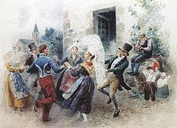
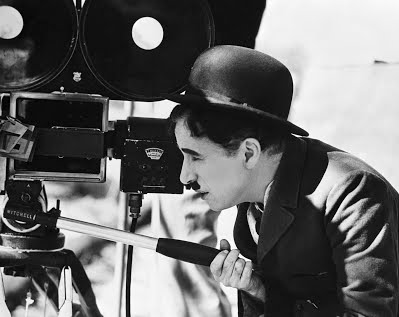
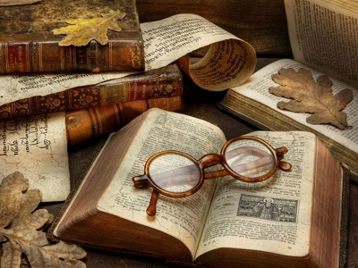

Культура і мистецтво
Коли мова заходить про культуру, ніхто не може відняти пальму першості у французів: незвичайна, дивовижна, витончена – ось відмінні риси французької культури. Без сумніву, тільки довга і багата історія могла привести до появи такої багатої культури. Саме у Франції зародилися багато течій світової культури, які зробили істотний вплив на хід історії, розвиток науки, мистецтва і літератури в цілому. Культурна спадщина Франції воістину величезна. Саме ця країна багато століть була і залишається центром світового мистецтва. Франція може бути маленькою країною в плані географії, але вона одна з найбільших, коли мова заходить про творчість, мистецтво, філософію, науку і техніку. 
Саме французам ми зобов’язані появою кіно і кіномистецтва. Французький кінематограф сформувався після Другої світової війни. “Нова хвиля” французького кіно стала окремим явищем у світовій культурі. Завдяки Франсуа Трюффо, Клоду Лелушу і іншим молодим талановитим режисерам, Франція стала одним з центрів світового кіномистецтва. Тон сучасному французькому кіно задають такі режисери як Люк Бессон, Жан-Пьєр Жене, Франсуа Озон, Філіп Гаррель. Говорячи про акторів, варто згадати Жана Рено, Одрі Тоту, Софі Марсо, Крістіан Клавьє, Меттью Кассовітц, які стали світовими зірками. 
Якщо і є щось пов’язане з Францією і відоме усім, то це швидше за все висока мода. Великі французькі модельєри Шанель, Діор, Ів Сен-Лоран звели моделювання одягу в ранг справжнього мистецтва. Після війни у Франції відбувається справжня революція у світі моди: в 1946 році з’являється перший купальник-бікіні, в 1947 р. Крістіан Діор створює свій особливий новий стиль. Незабаром Верб Сен Лоран, головний модельєр Будинку Dior, випустив свою першу сенсаційну колекцію. Література у Франції починає розвиватися в 9 столітті, в усякому разі саме цим століттям датуються пам’ятки літератури, що дійшли до нас. Свого розквіту літературна творчість досягає в 12 столітті. Про це свідчать відома епічна поема “Гімн про Роланде”, рицарська література, поезія труверів і трубадурів. В епоху відродження з’являється роман Раблє “Гаргантюа і Пантагрюель”, Мішель Монтень видає свої “Досліди”. У епоху класицизму нарівні з літературою активно розвивається філософія. Імена таких французьких філософів, письменників і драматургів як Декарт, Паскаль, Ларошфуко, Корнель, Расін, Мольєр, Шарль Перро, Жан де Лафонтен знайомі кожній освіченій людині. 
У XX столітті, французька література інтенсивно розвивається, як втім і сама французька мова. Багато письменників стали засновниками різних літературних шкіл і течій. Французькі письменники нашого часу по-своєму талановито відбивають “дух епохи” у своїх творах. Французька література відрізняється соціальною загостреністю, гуманізмом, витонченістю і красою форми. Живопис у Франції почав розвиватися дуже рано. Вже в 17 столітті він займає провідне місце в культурному житті країни. Франція подарувала нам такі стилі мистецтва як рококо, імпресіонізм . Протягом багатьох століть мистецтво Італії робило істотний вплив на розвиток образотворчих мистецтв Франції. Проте вже в 1860 році французьке мистецтво здійснює справжній прорив, після якого Франція стає беззаперечним лідером. Цей прорив пов’язаний в першу чергу з творчістю художників-імпресіоністів : Эдуарда Мане і Эдгара Дега, Огюста Ренуара, Клода Моне, Каміля Піссарро, Гюстав Кайботта та ін. Постімпрессіонізм відомий нам по творчості таких видатних художників, як Поль Гоген, Вінсент ван Гог і Анрі де Тулуз-Лотрек. У Франції поступово розвиваються нові художні школи і напрями в живописі: пуантилізм, виникає група “набі”, фовізм, кубізм. Музична культура Франції не менш цікава і різноманітна – це пов’язано з тим, що французька мова сама по собі є надзвичайно мелодійною, ритм пісні часто співпадає з ритмом мови. У 1920-х роках у Францію приходить джаз, найбільш яскравим представником якого став Стефан Граппеллі. У XX ст. На піку популярності опинилися Едіт Піаф, Шарль Азнавур, Жорж Брассенс. Відродилася народна музика (фолк-музика), фортепіано і акордеон – ось два інструменти, які незмінно асоціюються у нас з французькою музикою. У другій половині 20 століття естрадна музика починає займати провідні позиції не лише у Франції, але і у всьому світі, нам добре знайомі такі виконавці як: Мірей Матьє, Даліда, Джо Дассен, Патрисія Каас, Мілен Фармер і багато інших. Висновок: роблячи висновки можна сказати, що культура Франції настільки ж велика, як і сама Франція, кількість пам'ятників і шедеврів мистецтва просто неможливо порахувати. У культурі Франції представлені десятки стилів архітектури, живопису і літератури. Деякі пам'ятники культури Франції починають свою історію з часів палеоліту, печери стародавніх людей, з безліччю наскальних малюнків, що описують побут давньої людини. Саме у Франції були знайдені останки неандертальця - в однойменній печері, в Альпах. Як бачимо, Франція є батьківщиною самого величного архітектурного стилю - готики. Храми, споруджені в цьому стилі, вражають своєю легкістю, немов вони зроблені з повітря. Цей ефект досягається за рахунок гострих високих куполів. У цей же період, у 12-14 століттях, у багатьох містах Франції, будувалися чудові замки, велика частина з яких дійшла до нашого часу. Французька література - одна з найбільш відомих у світі. Основний розвиток вона отримала в Новий час, в 18-20 століттях.